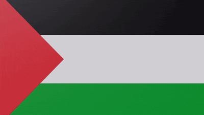

Muhammad sallallahu alaihi wasallam
ariticle Talk

From Wikipedia,the free encyclopedia
This article is about the islamic prophet. For other people named Muhammad (saw), see Muhammad (name). For the islmic view and perspective, see Muhammad(saw) in Islam .For other user, see Muhammad (saw)
muhammad (c:570 - 8 june 632)was an Arab religious and political leader and the founder of Islam accoording to islam , he was a prophet who was divinely inspiredto preach and confirm the monotheistic teachings of Adam,abraham,Moses,Jesus,He is believed to be the Seal of the prophet in Islam,and along with the Quranhis teachings and normative examplesfrom the basis for religious belief.
Muhammad was bron in mecca to the aristoratic Banu Hashim cl of the Quraysh He was the son of Abdullah ibn Abd al-Muttaib and Amin bint Wahb His father,Abdullah,the son of tribal leader Abd al-muttalib ibn Hashim, died around the time Muhammad was bron His Mother Amina died when he was six, leaving Muhammad an orphan. He was raised under the care of his gandfather,Abd al-muttalib, and paternal uncle,Abu talib. In later years, he woul periodically seclude himself in a mountain cave named hira